from lxml import html
import requests
search_url = "https://iqssdss2020.pythonanywhere.com/tutorial/cases/search"
search_page = requests.get(search_url)
search_html = html.fromstring(search_page.text)
firstEntry_link = search_html.xpath('//*[@id="results"]/table')
print(firstEntry_link)When to Use a Browser Driver
The Selenium browser driver is typically used to scrape data from dynamic websites that use JavaScript (although it can scrape data from static websites too). The use of JavaScript can vary from simple form events to single page apps that download all their content after loading. The consequence of this is that for many web pages the content that is displayed in our web browser is not available in the original HTML. For example, the following use-cases often occur:
- A result table shows up only after the user clicks the search box.
- Content following a click on a link is generated instantaneously rather than already being stored on the server before the click.
- A JavaScript request might trigger a new block of content to load.
The following subsections cover these three use-cases in detail.
Dynamic search
Let us look at an example dynamic web page, which is available at dynamic search form webpage. This example website has a search form that is used to locate students. Let us say we want to find all the students whose name begins with the letter A and who are in the fifth grade:
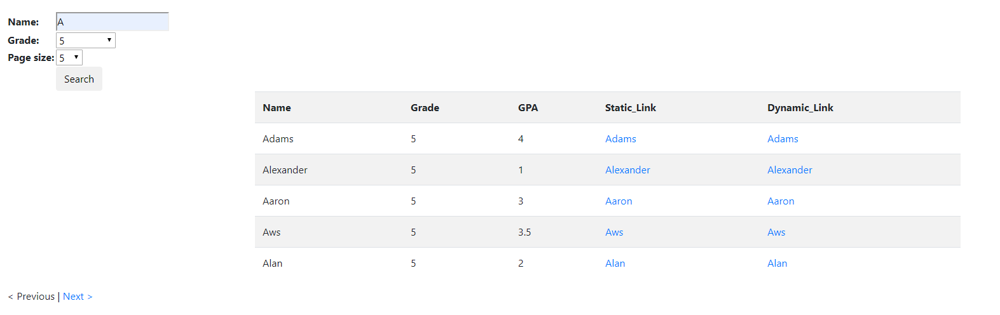
We place the cursor anywhere on this webpage, right-click and select Inspect from the menu to inspect the results. In the Elements window, we find that the results are stored within a <div> element with ID “results”:
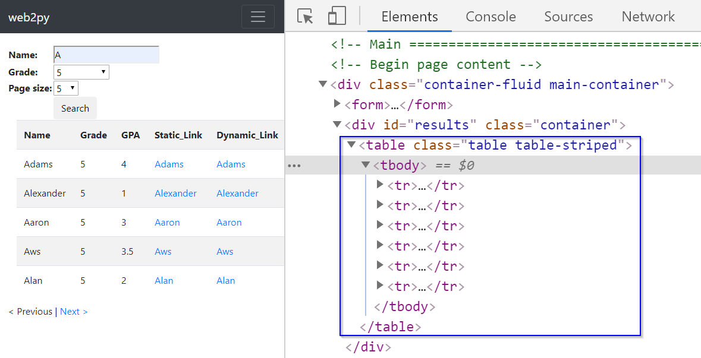
Let us try to scrape the information from the result table using the lxml module. The use of this module is also covered in detail in our Python Web-Scraping Workshop.
The example scraper here has failed to extract results since the xpath() method returns an empty list. Examining the source code of this web page can help us understand why. Let us put the cursor anywhere on this webpage. Right-click and select View page source from the menu to examine the source code. Here, we find that the <div> element with ID “results” is empty.
If we scroll down the source code a little, we find that the display of the result table is coded in a JavaScript function called displayResult(jsonresult) in the JavaScript section. This means that the web page has used JavaScript to load the search results dynamically. At this point, we can recognize that page source code is the original HTML we get when we make a request to the server without executing JavaScript code. In contrast, the Elements window has the HTML that has been revised via running the JavaScript section code.
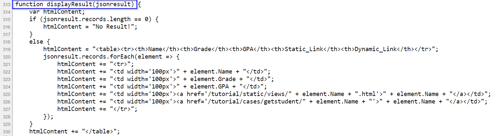
Dynamic link
Let us now examine what a dynamic link is, and how it is different from a static link. When we click on a link, if it is a static link, the content that appears comes from a file that has been stored on the server before the click. If it is a dynamic link, then the content that appears is generated instantaneously after the click by executing a JavaScript function. To see this, let us Inspect the result table in the Elements window.
Look at the two links highlighted below. They have a tag name <a> with an attribute href. The first link is a static link, while the second is a dynamic link:
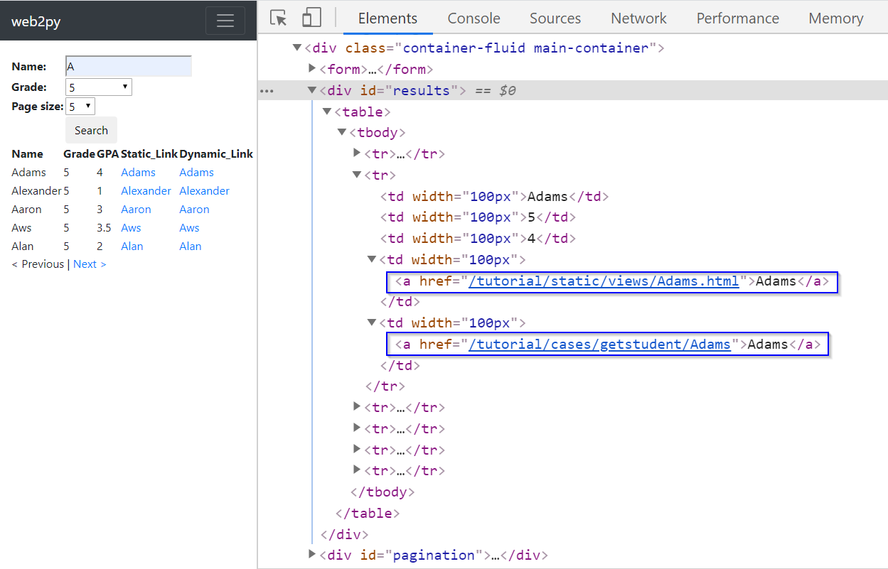
Normally, if a link is static, its link address will end with a file name with a file extension. In this case, the link address (https://iqssdss2020.pythonanywhere.com/tutorial/static/views/Adrian.html) ends with the file name Adrian and file extension .html. The link address is formed first starting with a server address (https://iqssdss2020.pythonanywhere.com) and followed by the web application name (/tutorial) and then followed by a hierarchical path of folders to that .html file.
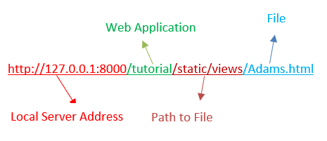
On the other hand, if a link is dynamic, we will not find a file extension at the end of its link address. For example, in this case, the link address (https://iqssdss2020.pythonanywhere.com/tutorial/cases/getstudent/Adams) has no file extension at the end. It is formed first beginning at a server address (https://iqssdss2020.pythonanywhere.com) and followed by the web application name (/tutorial) and then followed by the name of the Python script (cases.py) in the web application (/cases), which calls a function (getstudent()) within this script (/getstudent) followed by a parameter value (/Adams) to the function.
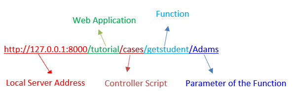
Suppose that we temporarily disable the JavaScript execution functionality in our browser by changing the browser’s settings. Let us copy the static link address and open it in a new browser. We should be able to see the profile of the chosen student as below:
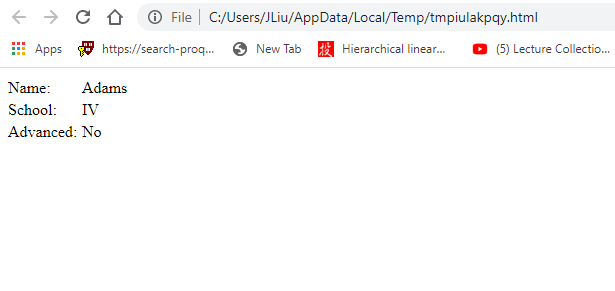
But if we copy the dynamic link address and open it in a new browser, we will only see an empty webpage with page layout as below:
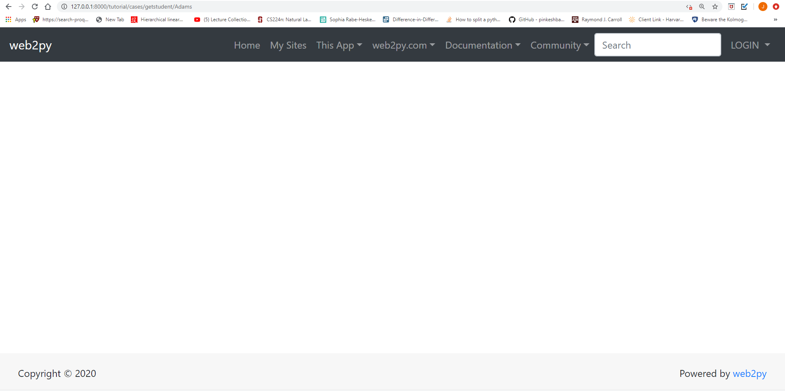
This is because the new browser whose JavaScript functionality has been disabled cannot execute JavaScript code to display the profile content. We can also see this difference using the requests module, which we also covered in detail in our Python Web-Scraping Workshop.
staticLink_url = "https://iqssdss2020.pythonanywhere.com/tutorial/static/views/Adams.html"
staticLink_page = requests.get(staticLink_url)
staticLink_html = html.fromstring(staticLink_page.text)
html.open_in_browser(staticLink_html, encoding = 'UTF-8')
dynamicLink_url = "https://iqssdss2020.pythonanywhere.com/tutorial/cases/getstudent/Adams"
dynamicLink_page = requests.get(dynamicLink_url)
dynamicLink_html = html.fromstring(dynamicLink_page.text)
html.open_in_browser(dynamicLink_html, encoding = 'UTF-8')The requests module cannot execute JavaScript code. As the code above illustrates, it behaves the same as a browser whose JavaScript functionality is disabled.
Examining the source code of the chosen student’s profile web page of both the static and dynamic links can help us further understand why. The source code of the profile web page of a static link shows a complete HTML file without a JavaScript section:
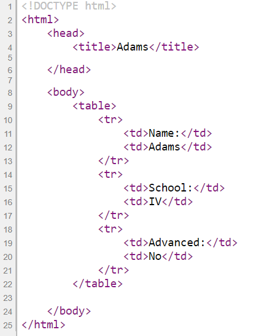
In the source code of the profile web page of a dynamic link, we find that the <div> element with ID “results” is empty. There is a JavaScript section next to it. We find that in this section there is a JavaScript page load function. This function makes a request to the server for the chosen student’s profile. The server then returns the information to the function. If successful, this function then displays the profile. This means that the web page has used JavaScript to load the chosen student’s profile dynamically.
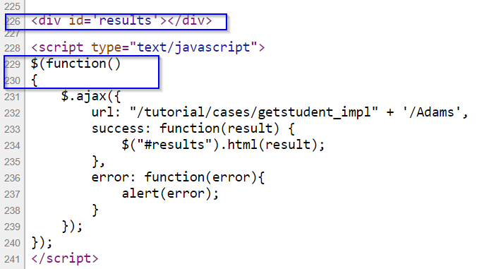
Dynamic load
With dynamic loading, new content appears only after a JavaScript request for that information is made to the server. There are two major ways in web application design to make a JavaScript request that triggers a new block of content to load. The first way uses pagination, while the second way involves the scroll bar hitting the bottom of a page.
Let us first look at pagination. Let’s inspect the web page of dynamic search again. We can see that the page links are stored within a <div> element with ID “pagination”. Here, the href attribute has a value of javascript:void(0). This just means the browser stays at the same position on the same page and does nothing. Once the page links are clicked, the browser will execute a JavaScript function previous() / next() to make another JavaScript request to the server for the information on that page. Then this new information from the the previous or next page will be displayed.
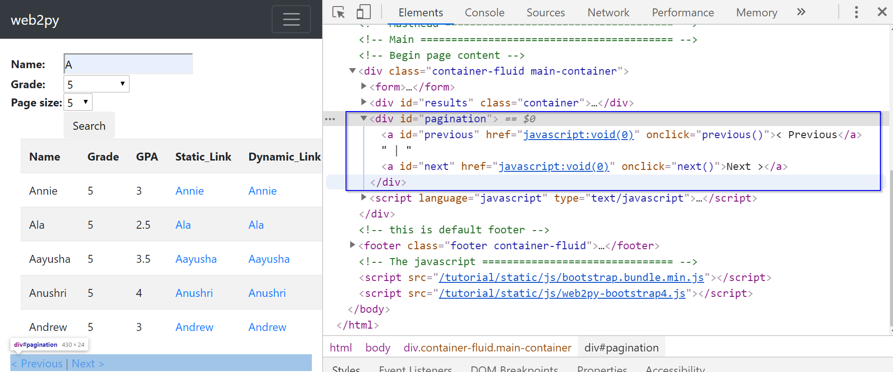
In this case, the value of the href attribute is not a URL. So, there is no point in trying to test if this is a static or dynamic link using the requests module. But we can illustrate the dynamic load using the lxml module. The code below tries to scrape the page link information using the lxml module:
search_url = "https://iqssdss2020.pythonanywhere.com/tutorial/cases/search"
search_page = requests.get(search_url)
search_html = html.fromstring(search_page.text)
page_link = search_html.xpath('//*[@id="next"]')
print(page_link)The scraper here has failed to extract the page links since the xpath() method returns an empty list. Let us examine the page source code to see why. Here, we find that the <div> element with ID “pagination” is empty:
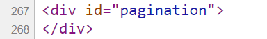
If we scroll down the source code to the end, we find that the display of the page links is coded in a JavaScript function displayResult(jsonresult) in the JavaScript section. This means that the web page has used JavaScript to load the page links and insert it at the position of the <div> element with ID “pagination” in the original HTML. We can see the revised HTML after running the JavaScript code in the Elements window:
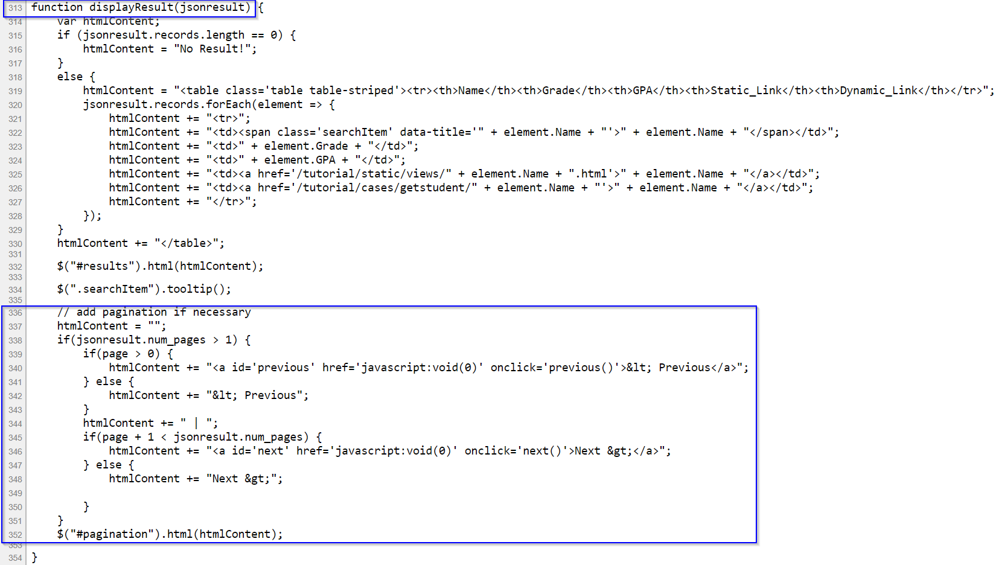
Now let us examine the second way of dynamically loading content –– scrolling down to the bottom of a page. Let’s look at another example web page, which is available at dynamic search load webpage. This webpage is the same as the previous example webpage, except here new content is loaded when the scroll bar reaches the bottom of a page instead of when clicking a link. The code below tries to scrap the information of the result table’s entries using the lxml module:
searchLoad_url = "https://iqssdss2020.pythonanywhere.com/tutorial/casesLoad/search"
searchLoad_page = requests.get(searchLoad_url)
searchLoad_html = html.fromstring(searchLoad_page.text)
entries_link = searchLoad_html.xpath('//*[@id="resultstable"]/tbody/tr')
print(page_link)The scraper here has failed to extract that information since the xpath() method returns an empty list. Below we see the result table part of the original HTML from the page source code. It is clear that there is no information under the tag name <tbody>. This explains why the xpath() method returns an empty list.
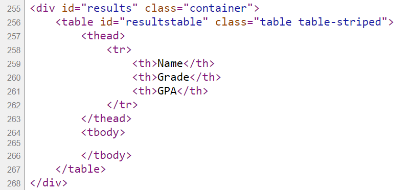
Below we see the same section of the revised HTML from the Elements window after it executes the JavaScript code. The webpage runs the JavaScript to insert the first chunk of the students’ information into the empty result table, which has been created statically, before running the JavaScript and then displaying it in the browser.
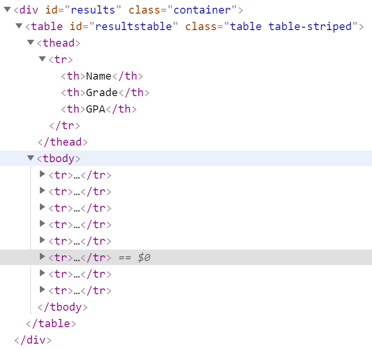
More interestingly, once we open the Elements window of this example webpage, under the <tbody> tag, we find there are 15 table entries (with tag <tr>). We can therefore infer that the initial load has a total of 15 table entries. If we scroll down to the bottom of the webpage, we can see that 9 more entries are appended to the table. If we continue to scroll down to the bottom of the page, nothing changes. This means that there exists a total of 24 table entries, with the new load delivering the last 9 of those entries. Your browser executes the JavaScript code to perform all these actions. If we look at the JavaScript section in the page source code, we will see that a JQuery method $(window).on("scroll", function() defines the scrolling down to the bottom of page and triggers the load of the new content once it is satisfied. And another JQuery method $('#resultstable > tbody:last-child').append(htmlContent) appends the new entries to the result table.